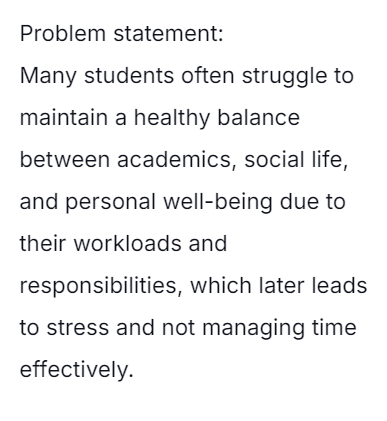
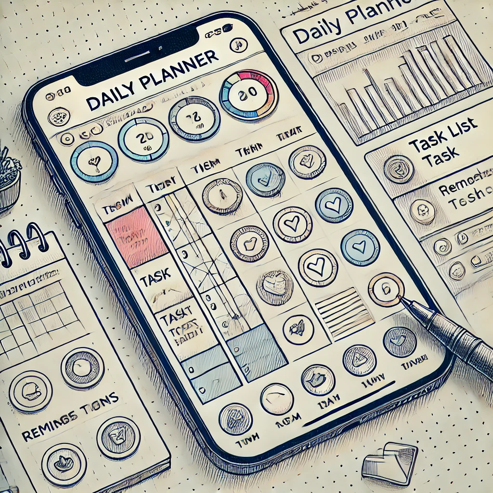

Highlighted projects
Problem Statement
Many students struggle to balance academics, social life, and personal well-being due to their workloads and responsibilities, leading to stress and difficulty managing time effectively.
Affinity Diagram

Affinity Diagram with 5 clusters and 20 ideas about a clear path for time management
Affinity Diagram
The sketches together demonstrate a flexible, cross-platform method of time, task, and habit management that improves users' capacity to maintain focus and organization in personal and professional life areas. OpenAI. (2024). Time Management Solution Sketches [Digital illustrations].
Prototype

Brief description of your prototype